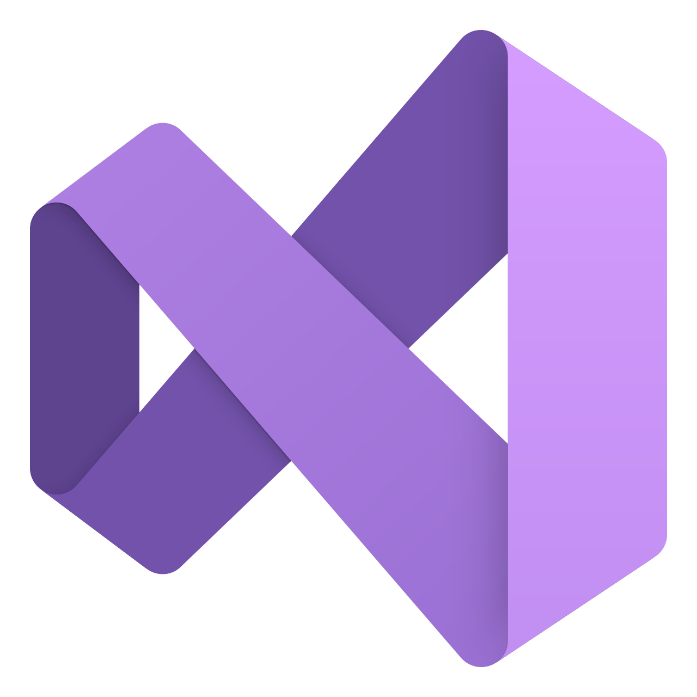
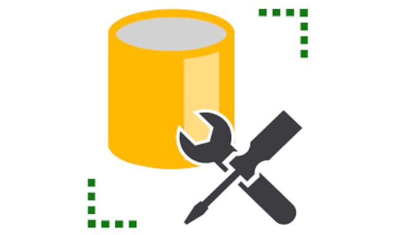
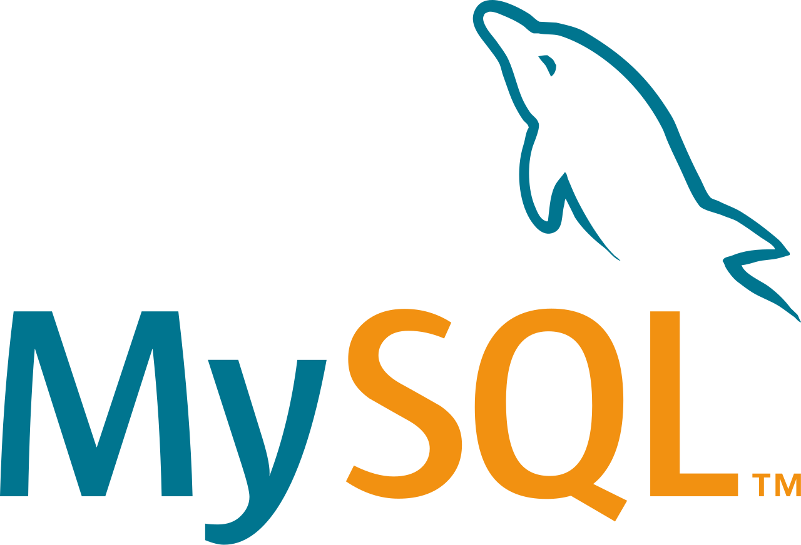

Lower case:
keskenduvad tarkvara praktilisele teostusele, kus erinevatest mudelitest ja skeemidest saab tegelik tarkvaratoode.
Need tööriistad toetavad andmebaasi struktuuri ja koodi genereerimist, testide läbiviimist, koodi versioonihaldust,
konfiguratsioonihaldust ning pöördprojekteerimist.
kasutatakse:
süsteemi juurutamiseks
süsteemi disainimiseks
Ise olen kasutanud:
Visual Studio

saad programmeerida
Server Management Studio

Saad luua andmebaase
mida ma pole kasutanud:
MySQL

Sa saad hallata andmebaase
| Head | Halvad |
|---|---|
| saab rakendada väikeste programmide koostamisel |
ebarealsed ootused |
| mugav läbida süsteemiarendus erinevaid etappe |
Aeglane rakendumine |